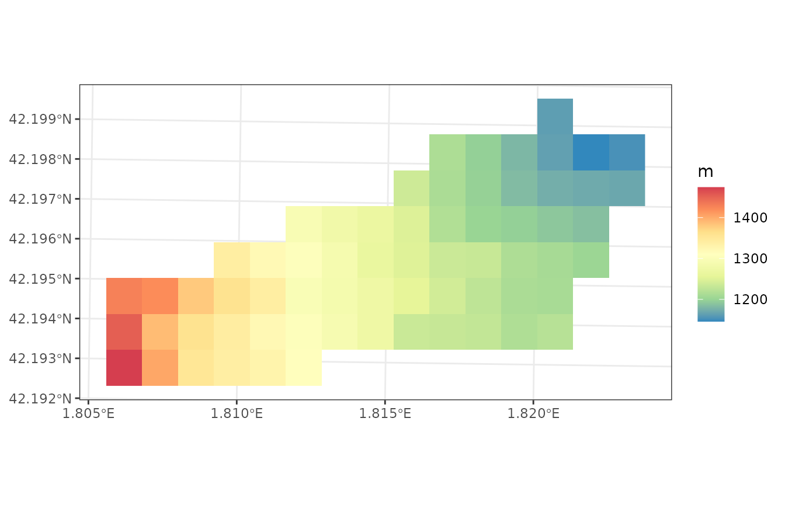
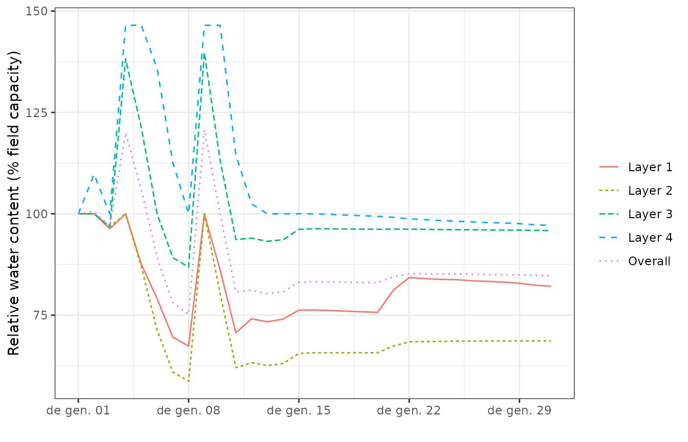
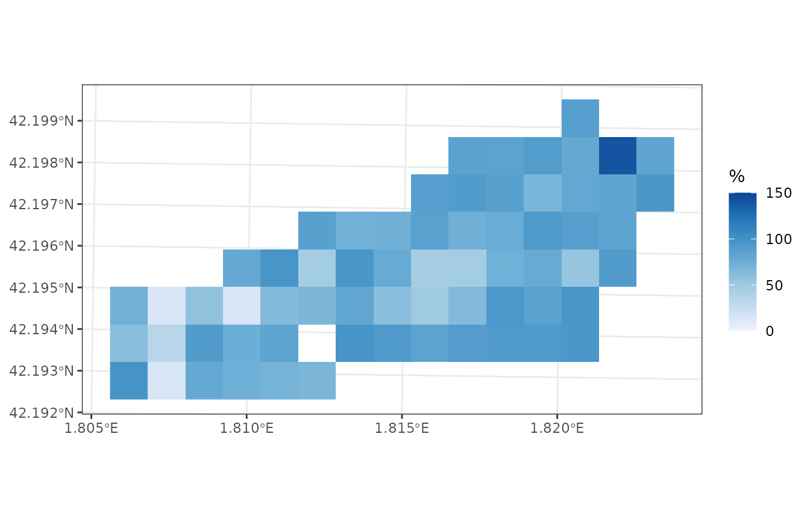

Watershed simulations
Miquel De Caceres
2024-04-20
WatershedSimulations.RmdAim
The aim of this vignette is to illustrate how to use
medfateland (v. 2.2.1) to carry out simulations of
forest function and dynamics on a set of forest stands while including
lateral water transfer processes. This is done using functions
spwb_land(), growth_land() and
fordyn_land(); which are counterparts of functions
spwb(), growth() and fordyn() in
package medfate. As an example, we will use function
spwb_land(), but the other two functions would be used
similarly.
Preparation
Preparing inputs for watershed simulations can be tedious. Two main inputs need to be assembled, described in the following two sections.
Input sf objects
Here we load a small example watershed included with the package, that can be used to understand the inputs required:
data("example_watershed")
example_watershed## Simple feature collection with 66 features and 13 fields
## Geometry type: POINT
## Dimension: XY
## Bounding box: xmin: 401430 ymin: 4671870 xmax: 402830 ymax: 4672570
## Projected CRS: WGS 84 / UTM zone 31N
## # A tibble: 66 × 14
## geometry id elevation slope aspect land_cover_type
## * <POINT [m]> <int> <dbl> <dbl> <dbl> <chr>
## 1 (402630 4672570) 1 1162 11.3 79.2 wildland
## 2 (402330 4672470) 2 1214 12.4 98.7 agriculture
## 3 (402430 4672470) 3 1197 10.4 102. wildland
## 4 (402530 4672470) 4 1180 8.12 83.3 wildland
## 5 (402630 4672470) 5 1164 13.9 96.8 wildland
## 6 (402730 4672470) 6 1146 11.2 8.47 agriculture
## 7 (402830 4672470) 7 1153 9.26 356. agriculture
## 8 (402230 4672370) 8 1237 14.5 75.1 wildland
## 9 (402330 4672370) 9 1213 13.2 78.7 wildland
## 10 (402430 4672370) 10 1198 8.56 75.6 agriculture
## # ℹ 56 more rows
## # ℹ 8 more variables: forest <list>, soil <list>, state <list>,
## # depth_to_bedrock <dbl>, bedrock_conductivity <dbl>, bedrock_porosity <dbl>,
## # snowpack <dbl>, aquifer <dbl>Some of the columns like forest, soil,
elevation, or state, were also present in the
example for spatially-uncoupled simulations, so we will not repeat them.
The following describes additional columns that are relevant here.
Land cover type
Simulations over watersheds normally include different land cover
types. These are described in column land_cover_type:
table(example_watershed$land_cover_type)##
## agriculture rock wildland
## 17 1 48Local and landscape processes will behave differently depending on the land cover type.
Aquifer and snowpack
Columns aquifer and snowpack are used as
state variables to store the water content in the aquifer and snowpack,
respectively.
Crop factors
Since the landscape contains agricultural lands, we need to define crop factors, which will determine transpiration flow as a proportion of potential evapotranspiration:
example_watershed$crop_factor = NA
example_watershed$crop_factor[example_watershed$land_cover_type=="agriculture"] = 0.75Grid topology
Note that the sf structure does not imply a grid per
se. Point geometry is used to describe the central coordinates of
grid cells, but does not describe the grid. This means that another
spatial input is needed to describe the grid topology, which in our case
is an object of class SpatRaster from package
terra:
r <-terra::rast(xmin = 401380, ymin = 4671820, xmax = 402880, ymax = 4672620,
nrow = 8, ncol = 15, crs = "epsg:32631")
r## class : SpatRaster
## dimensions : 8, 15, 1 (nrow, ncol, nlyr)
## resolution : 100, 100 (x, y)
## extent : 401380, 402880, 4671820, 4672620 (xmin, xmax, ymin, ymax)
## coord. ref. : WGS 84 / UTM zone 31N (EPSG:32631)The r object must have the same coordinate reference
system as the sf object. Moreover, each grid cell can
contain up to one point of the sf (typically at the cell
center). Some grid cells may be empty, though, so that the actual
simulations may be done on an incomplete grid. Note that the raster does
not contain data, only the topology is needed (to define neighbors and
cell sizes, for example). All relevant attribute data is already
included in the sf object.
Combining the r and sf objects allows
drawing rasterized maps:
plot_variable(example_watershed, variable = "elevation", r = r)
Watershed control options
Analogously to local-scale simulations with medfate, watershed simulations have overall control parameters. Notably, the user needs to decide which sub-model will be used for lateral water transfer processes (a decision similar to choosing the plant transpiration sub-model in medfate), by default “tetis”:
ws_control <- default_watershed_control("tetis")Carrying out simulations
Launching watershed simulations
To speed up calculations, we call function spwb_land()
for a single month:
dates <- seq(as.Date("2001-01-01"), as.Date("2001-01-31"), by="day")
res_ws1 <- spwb_land(r, example_watershed,
SpParamsMED, examplemeteo, dates = dates, summary_frequency = "month",
watershed_control = ws_control, progress = FALSE)Although simulations are performed using daily temporal steps,
parameter summary_frequency allows storing results at
coarser temporal scales, to reduce the amount of memory in spatial
results.
Structure of simulation outputs
Function spwb_land() and growth_land()
return a list with the following elements:
names(res_ws1)## [1] "sf" "watershed_balance" "watershed_soil_balance"
## [4] "outlet_export_m3s"Where sf is an object of class sf,
analogous to those of functions *_spatial():
res_ws1$sf## Simple feature collection with 66 features and 6 fields
## Geometry type: POINT
## Dimension: XY
## Bounding box: xmin: 401430 ymin: 4671870 xmax: 402830 ymax: 4672570
## Projected CRS: WGS 84 / UTM zone 31N
## # A tibble: 66 × 7
## geometry state aquifer snowpack summary result outlet
## <POINT [m]> <list> <dbl> <dbl> <list> <list> <lgl>
## 1 (402630 4672570) <spwbInpt [17]> 0.0404 3.56 <dbl[…]> <NULL> FALSE
## 2 (402330 4672470) <aspwbInp [3]> 0.198 3.56 <dbl[…]> <NULL> FALSE
## 3 (402430 4672470) <spwbInpt [17]> 0.0566 3.56 <dbl[…]> <NULL> FALSE
## 4 (402530 4672470) <spwbInpt [17]> 0.0482 2.56 <dbl[…]> <NULL> FALSE
## 5 (402630 4672470) <spwbInpt [17]> 0.00994 2.57 <dbl[…]> <NULL> FALSE
## 6 (402730 4672470) <aspwbInp [3]> 0.243 3.56 <dbl[…]> <NULL> TRUE
## 7 (402830 4672470) <aspwbInp [3]> 0.165 3.56 <dbl[…]> <NULL> FALSE
## 8 (402230 4672370) <spwbInpt [17]> 0.00275 2.84 <dbl[…]> <NULL> FALSE
## 9 (402330 4672370) <spwbInpt [17]> 0.00419 2.97 <dbl[…]> <NULL> FALSE
## 10 (402430 4672370) <aspwbInp [3]> 0.239 3.56 <dbl[…]> <NULL> FALSE
## # ℹ 56 more rowsColumns state, aquifer and
snowpack contain state variables, whereas
summary contains temporal water balance summaries for all
cells. Column result is empty in this case, but see
below.
The next two elements of the simulation result list, namely
watershed_balance and watershed_soil_balance,
refer to watershed-level results. For example,
watershed_balance contains the daily elements of the water
balance at the watershed level, including the amount of water exported
in mm in the last column.
head(res_ws1$watershed_balance)## dates Precipitation Rain Snow Snowmelt Interception NetRain
## 1 2001-01-01 4.869109 4.869109 0 0 0.7900101 4.079099
## 2 2001-01-02 2.498292 2.498292 0 0 0.6919287 1.806363
## 3 2001-01-03 0.000000 0.000000 0 0 0.0000000 0.000000
## 4 2001-01-04 5.796973 5.796973 0 0 0.7855456 5.011427
## 5 2001-01-05 1.884401 1.884401 0 0 0.5571451 1.327256
## 6 2001-01-06 13.359801 13.359801 0 0 0.8937189 12.466082
## Infiltration InfiltrationExcess SaturationExcess Runoff DeepDrainage
## 1 4.005324 0 0 0.07377438 0.003545635
## 2 1.768510 0 0 0.03785290 0.003504170
## 3 0.000000 0 0 0.00000000 0.003465461
## 4 4.923594 0 0 0.08783292 0.003787363
## 5 1.298705 0 0 0.02855154 0.003944415
## 6 12.263661 0 0 0.20242122 0.004965145
## CapillarityRise SoilEvaporation Transpiration HerbTranspiration
## 1 2.247422e-05 0.3867130 0.2793608 0
## 2 1.757712e-04 0.1356762 0.4955779 0
## 3 5.613658e-04 0.1844224 0.4164836 0
## 4 2.330954e-05 0.1257523 0.1874572 0
## 5 7.269397e-04 0.1448613 0.5090040 0
## 6 4.064161e-04 0.1293526 0.3742005 0
## InterflowBalance BaseflowBalance AquiferExfiltration WatershedExport
## 1 0.000000e+00 0.000000e+00 0 0.07377438
## 2 -1.443806e-23 -1.673341e-31 0 0.03785290
## 3 -1.604229e-23 -2.581727e-30 0 0.00000000
## 4 -1.411722e-22 9.561950e-30 0 0.08783292
## 5 -5.903563e-22 5.507683e-29 0 0.02855154
## 6 -6.416916e-22 -1.223930e-29 0 0.20242122Values of this output data frame are averages across cells in the
landscape. Data frame watershed_soil_balance is similar to
watershed_balance but focusing on cells that have a soil
(i.e. excluding artificial, rock or water land cover). Finally,
outlet_export_m3 contains the volume reaching each outlet
cell per day:
head(res_ws1$outlet_export_m3)## 6
## 2001-01-01 0.0005638724
## 2001-01-02 0.0002893174
## 2001-01-03 0.0000000000
## 2001-01-04 0.0006713247
## 2001-01-05 0.0002182251
## 2001-01-06 0.0015471461Accessing and plotting cell summaries
Unlike spwb_spatial() where summaries could be
arbitrarily generated a posteriori from simulation results,
with spwb_land() the summaries are always fixed and
embedded with the simulation result. For example, we can inspect the
summaries for a given landscape cell using:
res_ws1$sf$summary[[1]]## MinTemperature MaxTemperature PET Rain Snow Snowmelt
## 2001-01-01 -3.203556 2.427977 31.14151 58.09884 16.65065 13.09301
## Interception NetRain Infiltration InfiltrationExcess
## 2001-01-01 17.1751 40.92374 54.01675 0
## SaturationExcess Runoff DeepDrainage CapillarityRise SoilEvaporation
## 2001-01-01 0 0 0.066837 0.02646211 1.693804
## Transpiration HerbTranspiration InterflowInput InterflowOutput
## 2001-01-01 6.765493 0 0.06753704 0.03424541
## InterflowBalance BaseflowInput BaseflowOutput BaseflowBalance
## 2001-01-01 0.03329163 2.804731e-10 1.50188e-10 1.302852e-10
## AquiferExfiltration SWE SoilVol Psi1 WTD DTA
## 2001-01-01 0 1.649861 569.2058 -0.02941237 3625.407 15.4995Several plots can be drawn from the result of function
spwb_land() in a similar way as done for
spwb_spatial(). As an example we display a map of the
average water potential of the first soil layer during the simulated
month:
plot_summary(res_ws1$sf, variable = "Psi1", date = "2001-01-01", r = r)
Full simulation results for specific cells
The idea of generating summaries arises from the fact that local
models can produce a large amount of results, of which only some are of
interest at the landscape level. Nevertheless, it is possible to specify
those cells for which full daily results are desired. This is done by
adding a column result_cell in the input sf
object:
# Set request for daily model results in cells number 3 and 9
example_watershed$result_cell <- FALSE
example_watershed$result_cell[c(3,9)] <- TRUEIf we launch the simulations again (omitting progress information):
res_ws1 <- spwb_land(r, example_watershed,
SpParamsMED, examplemeteo, dates = dates, summary_frequency = "month",
watershed_control = ws_control, progress = FALSE)We can now retrieve the results of the desired cell, e.g. the third
one, in column result of sf:
S <- res_ws1$sf$result[[3]]
class(S)## [1] "spwb" "list"This object has class spwb and the same structure
returned by function spwb() of medfate.
Hence, we can inspect daily results using functions
shinyplot() or plot(), for example:
plot(S, "SoilPsi")
Continuing a previous simulation
The result of a simulation includes an element state,
which stores the state of soil and stand variables at the end of the
simulation. This information can be used to perform a new simulation
from the point where the first one ended. In order to do so, we need to
update the state variables in spatial object with their values at the
end of the simulation, using function
update_landscape():
example_watershed_mod <- update_landscape(example_watershed, res_ws1)
names(example_watershed_mod)## [1] "geometry" "id" "elevation"
## [4] "slope" "aspect" "land_cover_type"
## [7] "forest" "soil" "state"
## [10] "depth_to_bedrock" "bedrock_conductivity" "bedrock_porosity"
## [13] "snowpack" "aquifer" "crop_factor"
## [16] "result_cell"Note that a new column state appears in now in the
sf object. We can check the effect by drawing the water
potential in the first soil layer:
plot_variable(example_watershed_mod, variable = "psi1", r = r)
Now we can continue our simulation, in this case adding an extra month:
dates <- seq(as.Date("2001-02-01"), as.Date("2001-02-28"), by="day")
res_ws3 <- spwb_land(r, example_watershed_mod,
SpParamsMED, examplemeteo, dates = dates, summary_frequency = "month",
watershed_control = ws_control, progress = FALSE)The fact that no cell required initialization is an indication that we used an already initialized landscape.
Burn-in periods
Like other distributed hydrological models, watershed simulations with medfateland will normally require a burn-in period to allow soil moisture and aquifer levels to reach a dynamic equilibrium. We recommend users to use at least one or two years of burn-in period, but this will depend on the size of the watershed. In medfate we provide users with a copy of the example watershed, where burn-in period has already been simulated. This can be seen by inspecting the aquifer level:
data("example_watershed_burnin")
plot_variable(example_watershed_burnin, variable = "aquifer", r = r)
If we run a one-month simulation on this data set we can then compare the output before and after the burn-in period to illustrate its importance:
dates <- seq(as.Date("2001-01-01"), as.Date("2001-01-31"), by="day")
res_ws3 <- spwb_land(r, example_watershed_burnin,
SpParamsMED, examplemeteo, dates = dates, summary_frequency = "month",
watershed_control = ws_control, progress = FALSE)
data.frame("before" = res_ws1$watershed_balance$WatershedExport,
"after" = res_ws3$watershed_balance$WatershedExport)## before after
## 1 0.073774376 0.3731846
## 2 0.037852903 0.3327946
## 3 0.000000000 0.2715065
## 4 0.087832923 0.3926512
## 5 0.028551537 0.3233051
## 6 0.202421222 0.5931811
## 7 0.000000000 0.3305984
## 8 0.000000000 0.2612705
## 9 0.000000000 0.2580586
## 10 0.141107695 0.4860296
## 11 0.090092361 0.4547424
## 12 0.102705122 0.4643604
## 13 0.001455222 0.3007647
## 14 0.000000000 0.2752761
## 15 0.000000000 0.2753467
## 16 0.000000000 0.2716527
## 17 0.000000000 0.2674355
## 18 0.000000000 0.2645210
## 19 0.000000000 0.2637802
## 20 0.000000000 0.2644819
## 21 0.122633540 0.4753295
## 22 0.136742721 0.5118090
## 23 0.007795713 0.3039228
## 24 0.017187861 0.2902332
## 25 0.018558367 0.2997559
## 26 0.000000000 0.2814159
## 27 0.009952749 0.2797189
## 28 0.000000000 0.2753959
## 29 0.000000000 0.2738947
## 30 0.000000000 0.2687231
## 31 0.000000000 0.2587818Simulations of watershed forest dynamics
Running growth_land() is very similar to running
spwb_land(). However, a few things change when we want to
simulate forest dynamics using fordyn_land(). Regarding the
sf input, an additional column
management_arguments may be defined to specify the forest
management arguments (i.e. silviculture) of cells. Furthermore, the
function does not allow choosing the temporal scale of summaries. A call
to fordyn_land() for a single year is given here:
res_ws2 <- fordyn_land(r, example_watershed,
SpParamsMED, examplemeteo,
watershed_control = ws_control, progress = FALSE)## ℹ Creating 65 input objects for model 'growth'.## ✔ Creating 65 input objects for model 'growth'. [12ms]## ## Stands ■■■■■■■■■■■ 35% | ETA: 2s## Stands ■■■■■■■■■■■■■■■■■■■■■■■■■■■■ 91% | ETA: 0s## Stands ■■■■■■■■■■■■■■■■■■■■■■■■■■■■■■■ 98% | ETA: 0sIn this case, the sf part of the output contains
additional columns, analogous to those of
fordyn_scenario().
names(res_ws2$sf)## [1] "geometry" "state" "aquifer" "snowpack"
## [5] "summary" "forest" "tree_table" "shrub_table"
## [9] "dead_tree_table" "dead_shrub_table" "cut_tree_table" "cut_shrub_table"